Categorical Data & MultiIndex
Optimize Memory, Enforce Domain Integrity, and Master Multi-Tier Hierarchical Data Pipelines in Pandas
1. Introduction — What are Categorical Data and MultiIndex?
Jab aap real-world data science projects pe kaam karte hain, toh data hamesha simple 2D numbers aur text nahi hota. Do aisi massive challenges aati hain jinko handle karne ke liye Pandas ne specialized high-performance weapons create kiye hain: Categorical Data aur MultiIndex.
Scenario A — Categorical Data (Limited Categories vs. Free Text):
Ek college ERP database mein 50,000 students ka data hai. Har student ke paas ek department column hai ("Computer Science", "Electronics", "Mechanical", "Civil") aur ek grade column hai ("A", "B", "C", "D", "F").
Agar aap inko standard Python strings (object dtype) mein store karte hain, toh Pandas har row ke liye memory mein naya string pointer allocate karega — RAM waste hogi aur comparison slow hoga. Categorical dtype in repetitive text ko internal tiny integers (jaise 0, 1, 2) mein encode karta hai, jisse 90%+ RAM save hoti hai aur natural academic sorting possible hoti hai!
Scenario B — MultiIndex (Hierarchical Coordinates vs. Flat Rows):
Ek retail company (jaise Reliance Digital ya Croma) ko har store ki sales analyze karni hai. Lekin sales sirf ek dimension pe nahi hoti — woh City → Store → Month ke hierarchical nested structure mein hoti hai. MultiIndex aapko ek table mein multiple index levels create karne deta hai taaki aap directly "Mumbai ke Store A ke January sales" ko ek clean tuple coordinate se slice kar sakein!
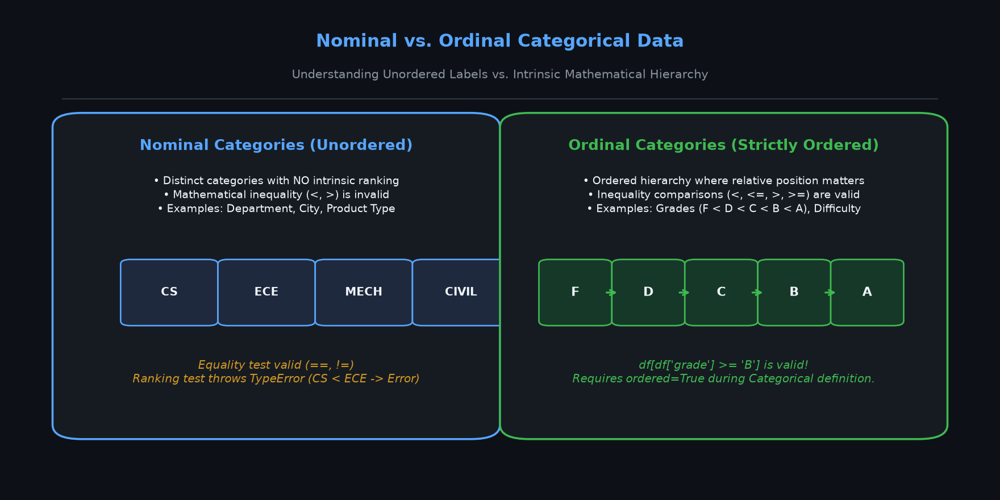
Core Concepts Introduced in This Topic:
- Categorical Variables: Columns jinme values ka ek fixed, discrete set hota hai (jaise Blood Group, Semester, Department, Tier).
- Nominal vs. Ordinal: Nominal categories mein koi ranking nahi hoti (
"Mumbai" vs "Delhi"), jabki Ordinal categories mein strict hierarchy hoti hai ("F" < "D" < "C" < "B" < "A"). - category Dtype: Pandas ka memory-efficient data type jo dictionary encoding use karta hai.
- MultiIndex (Hierarchical Index): Ek index jo multiple dimensions (levels) ko hold karta hai, enabling multidimensional grouping and fast binary search retrieval.
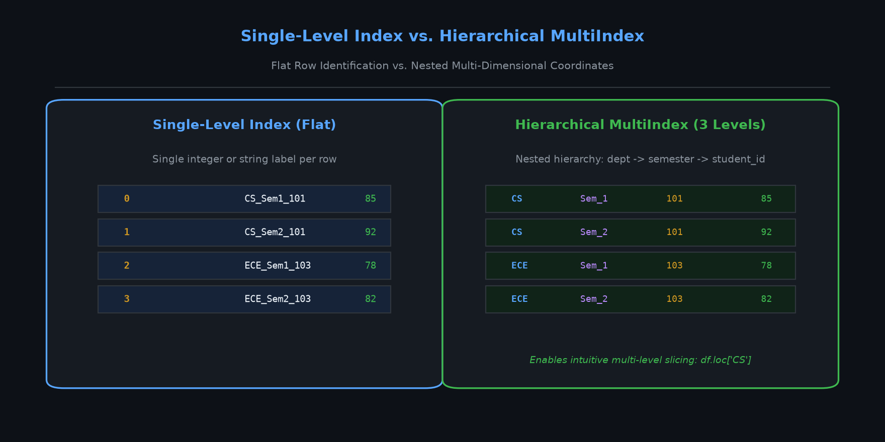
2. Understanding Categorical Data
Data science mein continuous numbers (jaise salary, temperature, marks) aur categorical labels ke beech fundamental difference hota hai. Categorical data ek aise discrete domain se aata hai jisme limited possibilities hoti hain.
Nominal vs. Ordinal: The Critical Difference
| Category Type | Definition | Mathematical Meaning | Real-World Examples | Valid Python Operations |
|---|---|---|---|---|
| Nominal | Distinct labels without any natural ranking or order. | Only Identity (Equality). Value A != Value B. | Department (CS, ECE, MECH), City, Color, Gender, Payment Method | ==, !=, isin(). Inequalities (<, >) throw TypeError! |
| Ordinal | Categories that possess an inherent mathematical hierarchy. | Rank & Order. Value A < Value B < Value C. | Academic Grades (F < D < C < B < A), Difficulty (Beginner < Pro), Customer Tier | ==, !=, <, <=, >, >=, sort_values() |
Kabhi-kabhi categorical data numbers ke roop mein store hota hai — jaise Customer Status (1 = Active, 2 = Pending, 3 = Churned) ya Pincodes (400001, 560001).
Mistake: In numbers ka average (mean()) calculate karna meaningless hota hai! (Active + Churned / 2 = 2 — yeh koi logical calculation nahi hai). Inhe hamesha category ya string dtype treat karein, numeric measurement nahi!
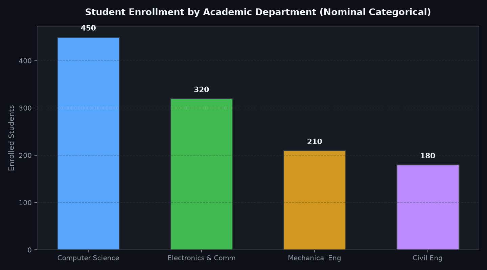
Code Example 1 (College): Academic Departments and Grades
Let's create a DataFrame containing both nominal departments and ordinal student grades:
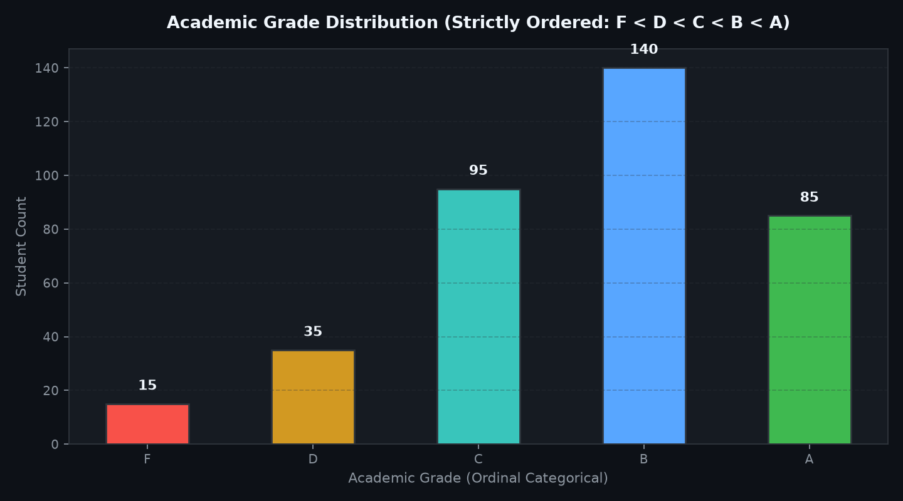
Code Example 2 (E-Commerce): Product Categories and Membership Tiers
In retail analytics, product category is nominal, while customer membership tier is ordinal:
3. Understanding Pandas category Dtype & Internal Codes
Pandas ka category dtype internally Dictionary Encoding use karta hai. Har string ko bar-bar store karne ke bajaye, Pandas do components maintain karta hai:
cat.categories: Ek compact array jisme unique strings sirf ek baar store hoti hain.cat.codes: Ek low-memory integer array (int8yaint16) jo har row ke liye category ka index store karta hai.
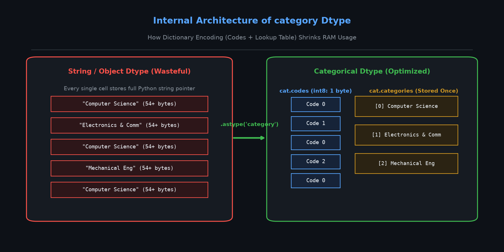
Converting to Category with astype("category")
The simplest way to convert any existing object or string column into a category is df['col'] = df['col'].astype('category').
Code Example 1 (College): Department Conversion and Codes Inspection
Aman is CS → Code 0
Priya is ECE → Code 1
Rohan is CS → Code 0 (reused!)
Sneha is MECH → Code 2
Row memory mein sirf tiny 8-bit integers (0, 1, 0, 2) store ho rahe hain! This explains the massive speed and memory benefits.
Missing Values and Category Code -1
Agar kisi row mein missing value (NaN ya None) hoti hai, toh Pandas usko kisi category index se map nahi karta. Instead, missing values ko special code -1 assign kiya jata hai!
Code Example 2 (E-Commerce): Order Status with Missing Values
Notice that the second row with NaN received code -1. Category labels mein NaN add nahi hota — it remains represented as a sentinel missing value.
4. Defining Categories and Controlling Category Order
Jab aap sirf .astype('category') use karte hain, toh Pandas automatic alphabetical order mein categories define karta hai (jaise ['A', 'B', 'C', 'D', 'F'] ya ['CS', 'ECE']) aur unhe unordered (nominal) rakhta hai.
Lekin ordinal data ke liye (jaise academic grades jahan F < D < C < B < A ya membership tiers jahan Bronze < Silver < Gold < Platinum), aapko explicitly category sequence define karni chahiye using pd.CategoricalDtype.
Agar aapke raw data mein aisi value aati hai jo aapki declared categories list mein exist nahi karti (jaise typo "Grade_Z"), toh Pandas use quietly NaN (code -1) mein convert kar dega!
Best Practice: Conversion se pehle hamesha unique values check karein: set(df['col']) - set(expected_categories)!
Code Example 1 (College): Defining Explicit Academic Grade Order
Code Example 2 (Course Difficulty): Detecting Unexpected Labels
5. Sorting and Comparing Categorical Values
Categorical data ko ordered define karne ka sabse bada benefit yeh hota hai ki aapki sorting alphabetical order ke bajaye logical business order follow karti hai, aur aap natural comparisons kar sakte hain.
Why Standard Alphabetical Sorting Fails
Agar aap grades ko standard string ki tarah sort karenge, toh alphabetical sort A, B, C, D, F aayega. Lekin academic perspective se F sabse kamzor score hai aur A highest! Agar aap df.sort_values(by="grade") karte hain with ordered categories, toh lowest student pehle aayega aur top ranker end mein!
Code Example 1 (College): Academic Sorting and Threshold Filtering
Code Example 2 (E-Commerce): Customer Tier Slicing & TypeError Trap
What happens if you attempt mathematical comparisons on an unordered (nominal) categorical column?
6. Useful Categorical Operations — The .cat Accessor
Jaise text columns ke paas .str accessor hota hai aur datetimes ke paas .dt accessor hota hai, categorical series ke paas specialized .cat accessor hota hai. In operations ko teen primary groups mein organize kiya jata hai:
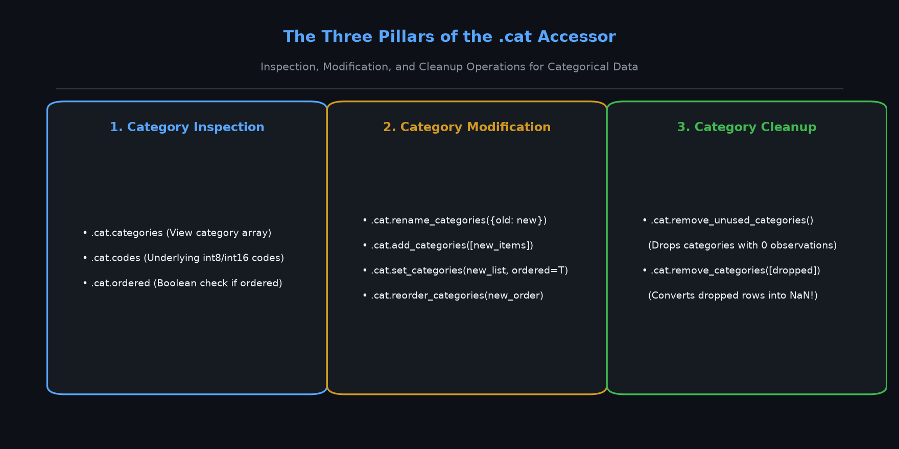
| Pillar | Method / Property | Functionality & Risk Level |
|---|---|---|
| Inspection | s.cat.categories |
Returns Index of all declared unique categories. Safe & read-only. |
| Inspection | s.cat.codes |
Returns the underlying integer array (int8/int16). Safe & read-only. |
| Inspection | s.cat.ordered |
Returns boolean True if ordinal, False if nominal. |
| Modification | s.cat.rename_categories() |
Renames category labels in-place. Mapping dictionary {old: new}. |
| Modification | s.cat.add_categories() |
Appends new available category options without affecting existing rows. |
| Modification | s.cat.set_categories() |
Re-defines entire category universe and order. ⚠ Drops omitted categories to NaN! |
| Modification | s.cat.reorder_categories() |
Changes the sort order of existing categories without adding/dropping. |
| Cleanup | s.cat.remove_unused_categories() |
Prunes categories that have 0 occurrences in actual dataset. ✅ Safe |
| Cleanup | s.cat.remove_categories() |
Removes specific categories. ⚠ Existing matching rows become NaN! |
Code Example 1 (College): Renaming Categories and Adding Options
Code Example 2 (E-Commerce): Removing Unused Categories vs. Dropping Active Categories
7. Categorical Data in Analysis — The observed= Parameter
Jab aap categorical columns ko groupby(), value_counts(), ya crosstab() mein use karte hain, toh ek fundamental behavior change hota hai: Unobserved Categories.
Agar aapke dataset mein 4 departments defined hain (CS, ECE, MECH, CIVIL) lekin dataset mein kisi bhi row mein CIVIL ka record nahi hai, toh ordinary string column CIVIL ko completely omit kar dega. Lekin categorical column ko pata hota hai ki CIVIL ek valid category hai!
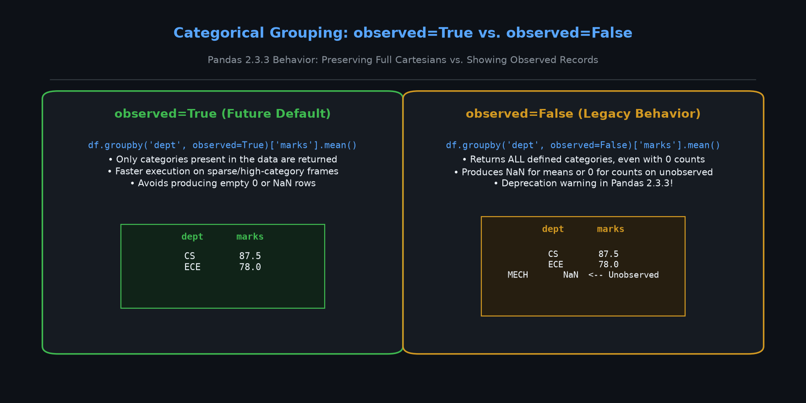
Pandas version 2.3.3 mein:
df.groupby("dept", observed=False): Deprecated legacy behavior! Returns all declared categories (including unobserved ones with 0 count or NaN mean). Produces a FutureWarning.
df.groupby("dept", observed=True): The recommended modern standard! Only groups rows that actually exist in the data, preventing massive memory bloat in multi-column groupings.
Code Example 1 (College): Comparing observed=True vs. observed=False
Code Example 2 (E-Commerce): Multi-Category Crosstab Analysis
Examining order status distribution across retail channels with pd.crosstab():
8. Memory Usage & Performance Benchmarking
Ek standard misconception hota hai: "Har column ko categorical bana do, dataset 10x fast ho jayega!"
Yeh sach nahi hai. Categorical data memory tabhi reduce karta hai jab column ki cardinality low ho (yani unique values ki sankhya total rows ke comparison mein bohot kam ho).
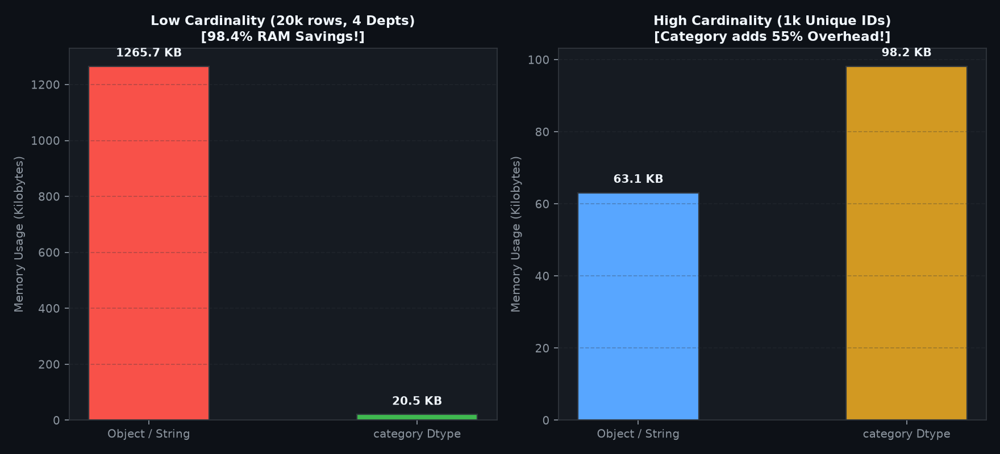
Empirical Benchmarking on Actual Executed Data
Let's run a rigorous measurement on two contrasting 20,000-row datasets using memory_usage(deep=True):
Convert to category if: len(unique_values) / len(total_rows) < 0.05 (Yani 5% se kam unique values hain aur repeated strings hain).
Do NOT convert if: Column customer names, email addresses, order IDs, ya transaction UUIDs hold karta hai. Is case mein categorical structure internal dictionary create karke memory badha deta hai!
9. Common Categorical Data Mistakes & Troubleshooting
Beginners categorical data ke sath 10 recurring traps mein phans jaate hain. Let's inspect each with exact faulty vs. corrected code:
| Problem / Bug | Underlying Root Cause | Correct Production Solution |
|---|---|---|
| Alphabetical Grade Sort | Converted with .astype('category') without declaring ordered=True. |
Use pd.CategoricalDtype(categories=[...], ordered=True). |
| TypeError on Inequality (>=) | Comparing unordered nominal categories (e.g. df['city'] > 'Delhi'). |
Only perform inequalities on ordered categories; check cat.ordered. |
| Quiet NaN Conversion | Raw data contained typos not present in declared categories=[...] list. |
Audit raw data first: set(df['col']) - set(categories). |
| Treating Codes as Math | Calling .mean() on cat.codes thinking it represents real values. |
Codes are arbitrary 0, 1, 2 indices. Never calculate mathematical metrics on codes. |
| FutureWarning in groupby() | Omitting observed=True parameter in Pandas 2.3.3. |
Explicitly pass observed=True to adopt modern standard behavior. |
| Memory Bloat on IDs | Converting high-cardinality unique keys to category. | Keep unique IDs as string or int64; do not categorize. |
| Missing Level after remove() | Used remove_categories() on values currently present in rows. |
Use remove_unused_categories() to safely purge only 0-frequency items. |
| Comparing Different Categories | Comparing Series A with Series B having different declared category universes. | Reconcile categories with s.cat.set_categories() before comparison. |
| Accidental Drop in set_categories | Called set_categories(['New']) without including existing items. |
Ensure all required active categories are retained in the new list. |
| Unintended 0s in Groupby | Used observed=False on multiple categorical columns generating Cartesian explosions. |
Pass observed=True to suppress empty Cartesian product combinations. |
10. Introduction to MultiIndex (Hierarchical Indexing)
Abtak humne single-level index dekha — jahan har row ka ek single identifier hota tha: 0, 1, 2... ya student names. Lekin complex datasets naturally multidimensional hote hain.
MultiIndex (ya Hierarchical Index) ek aisa powerful structure hai jo aapko ek hi axis pe multiple index levels stack karne deta hai. Think of it as a folder hierarchy: Department → Semester → Student ID.
College Scenario: Ek college registrar ko har semester ke marks track karne hain. Instead of combining strings into a messy identifier like "CS_Sem1_101", MultiIndex creates structured coordinate tuples: ('CS', 'Sem_1', 101).
E-Commerce Scenario: Retail chain mein sales ko ('Mumbai', 'Store_A', 'Jan') ke format mein query kiya ja sakta hai. Aap directly pure Mumbai region ki sales ya kisi specific store ke specific month ka turnover access kar sakte hain.
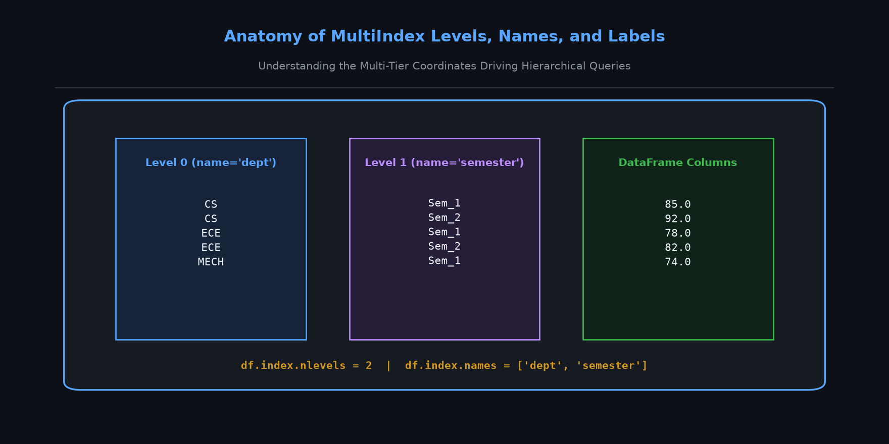
Code Example 1 (College): Creating a 2-Tier Hierarchical DataFrame
Code Example 2 (E-Commerce): 2-Tier Sales Hierarchy (City and Store)
11. Creating a MultiIndex — The 4 Essential Construction Methods
Pandas MultiIndex create karne ke liye 4 standard approaches provide karta hai:
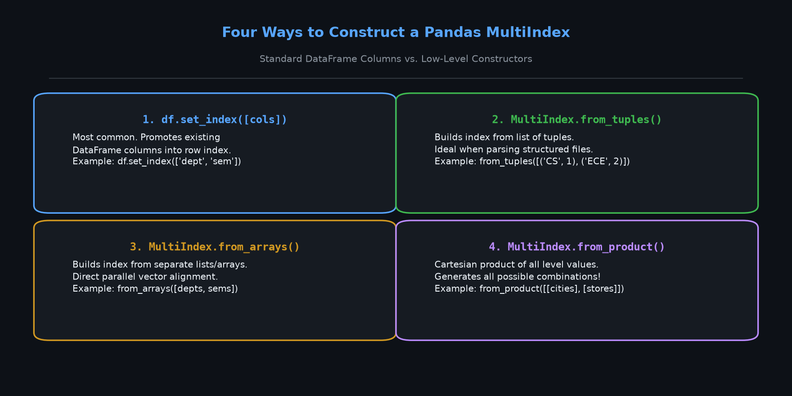
| Constructor Method | Input Data Structure | Ideal Use Case |
|---|---|---|
df.set_index([cols]) |
Existing DataFrame columns | Most common in analytics. Promotes columns into row indices. |
MultiIndex.from_tuples() |
List of coordinate tuples: [('CS', 1), ('ECE', 2)] |
Parsing structured files, JSON, or database query results. |
MultiIndex.from_arrays() |
List of separate parallel arrays/lists: [[cities], [stores]] |
Building index from NumPy arrays or separate columns. |
MultiIndex.from_product() |
List of distinct level values: [[cities], [stores]] |
Cartesian Product! Generates all possible combinations automatically. |
Code Example 1 (College): from_tuples() vs. from_arrays()
Code Example 2 (E-Commerce): from_product() Generating All Combinations
12. Selecting Data from MultiIndex — .loc[] and IndexSlice
MultiIndex mein data select karte waqt standard single index ke comparison mein syntax rules alag hote hain. Step-by-step master karein:
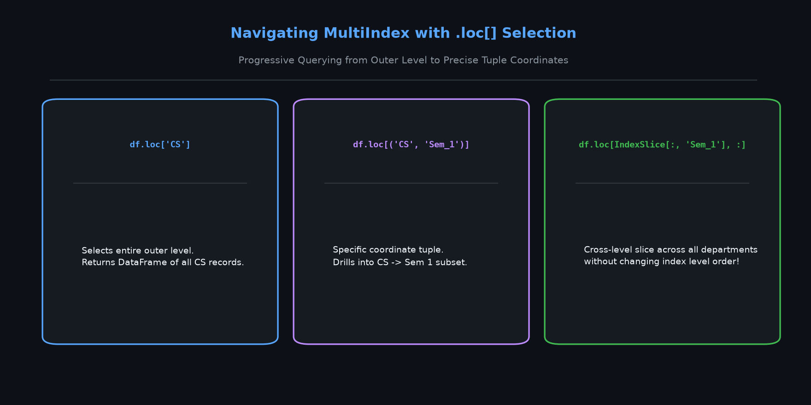
Three Levels of .loc[] Selection:
- Outer Level Selection:
df.loc['CS']— Returns all rows where Level 0 is 'CS'. - Exact Coordinate Tuple:
df.loc[('CS', 101)]— Drills directly into the single matching cell or row. - Cross-Level Slicing:
df.loc[pd.IndexSlice[:, 'Sem_1'], :]— Slices all Sem 1 records across all departments!
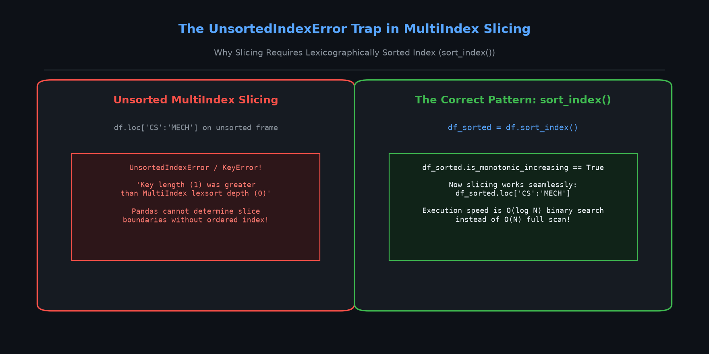
Agar aapka MultiIndex lexicographically sorted nahi hai aur aap range slice (jaise df.loc['CS':'MECH']) try karte hain, toh Pandas UnsortedIndexError throw karega!
Mandatory Rule: MultiIndex pe advanced slicing karne se pehle hamesha df = df.sort_index() run karein!
Code Example 1 (College): MultiIndex Selection and Slicing
Code Example 2 (E-Commerce): Slicing Flagship Retail Stores
13. Sorting and Reorganizing MultiIndex — swaplevel() and reorder_levels()
Kabhi-kabhi aapko hierarchical dimensions ka order change karna hota hai — jaise Department → Semester ke bajaye aapko Semester → Department perspective se data analyze karna hai.
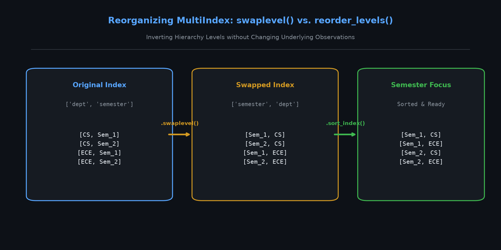
Core Reorganizing Methods:
df.sort_index(level=...): Sorts the MultiIndex lexicographically. You can specify a particular level (e.g.level='semester').df.swaplevel(i, j): Swaps two specific levels (e.g. level 0 and level 1).df.reorder_levels([names]): Arbitrarily reorders 3 or more levels simultaneously into a new sequence.
Code Example 1 (College): Inverting Department and Semester Hierarchy
Code Example 2 (E-Commerce): 3-Level Reordering with reorder_levels()
14. reset_index() & Flattening MultiIndex into Tabular Format
Jab aapko hierarchical analysis ke baad data kisi relational database (SQL), CSV export, ya machine learning model (Scikit-Learn/PyTorch) mein feed karna hota hai, toh hierarchical index inconvenient ban jata hai. Models flat 2D tables expect karte hain jahan har dimension ek standard column ho.
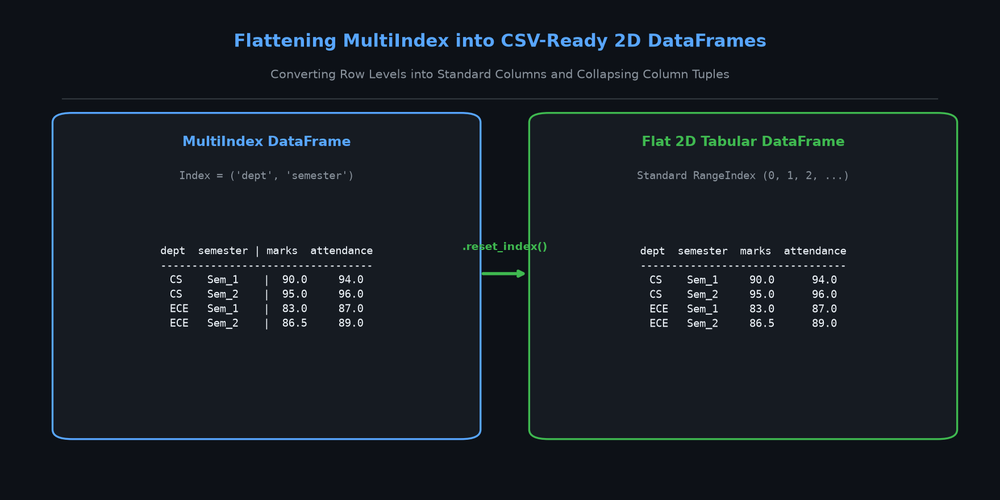
Core Flattening Tools:
df.reset_index(): Index levels ko standard columns mein push karta hai aur standardRangeIndex (0, 1, 2...)assign karta hai.df.reset_index(drop=True): ⚠ Warning! Discards index levels completely instead of converting them to columns!- Flattening MultiIndex Column Headers: Jab aggregation ya unstacking se 2-level column tuples ban jaate hain (jaise
('revenue', 'sum')), unhe list comprehension se collapse kiya jata hai:['_'.join(col).strip() for col in df.columns].
Code Example 1 (College): Restoring Flat Table from MultiIndex
Code Example 2 (E-Commerce): Collapsing Multi-Level Groupby Aggregation Columns
15. stack() and unstack() with MultiIndex — 90-Degree Rotation
Topic 16 (Reshaping Data) mein humne dekha tha ki stack() aur unstack() tabular data ko rotate karte hain. MultiIndex ke context mein inka role aur bhi critical ho jata hai:
df.unstack(level): Ek hierarchical row index level ko bahar kheench kar horizontal column headers bana deta hai. (Long → Wide).df.stack(level): Column headers ko vertical row index mein pack kar deta hai. (Wide → Long).
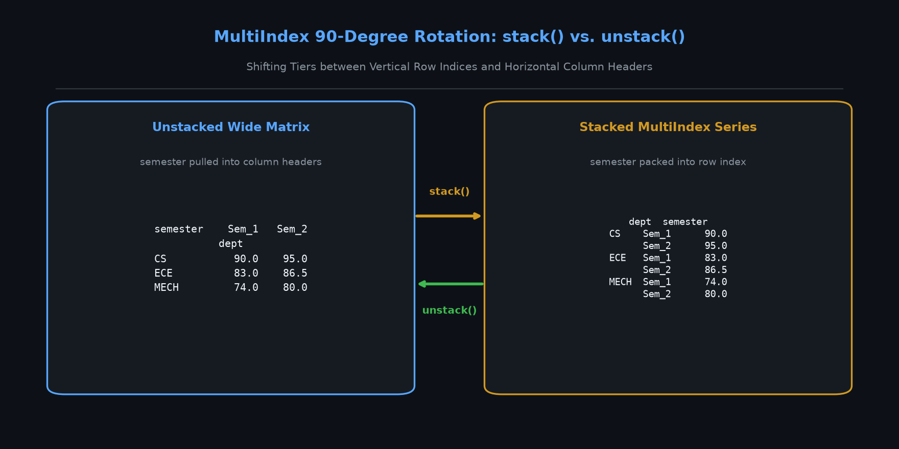
Code Example 1 (College): Unstacking Semester for Executive Department Matrix
Code Example 2 (E-Commerce): Converting Monthly Revenue Matrix to Long Series
16. MultiIndex Aggregation & Cross-Sections with df.xs()
Aam taur pe jab aapko kisi specific intermediate level ka data slice karna hota hai (jaise pure dataset se sirf Sem_1 ka record nikalna), toh beginners sochte hain ki pehle swaplevel() karna padega. Lekin Pandas ek special method provide karta hai: df.xs() (Cross-Section).
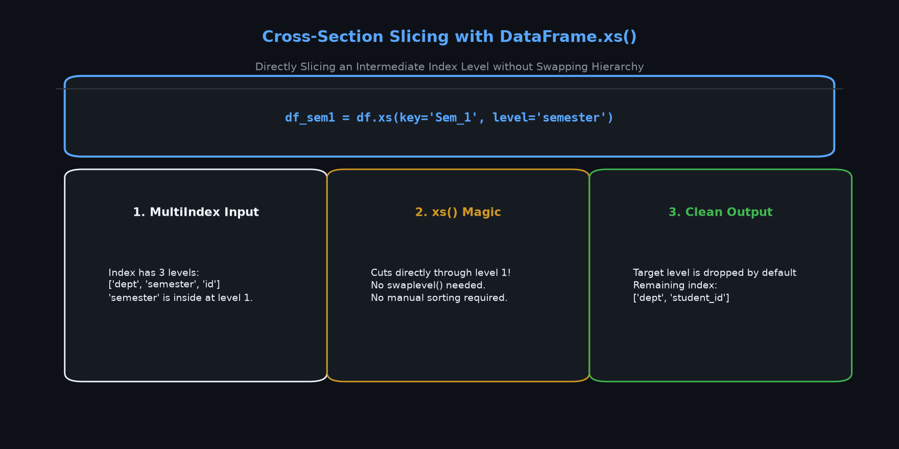
Code Example 1 (College): Direct Level Slicing with df.xs()
Code Example 2 (E-Commerce): Store Revenue Cross-Section across Cities
17. Categorical Data and MultiIndex Together — Architectural Synergy
Aksar beginners confuse karte hain: "Mujhe Categorical use karna chahiye ya MultiIndex?"
The answer is: They solve completely different, complementary problems!
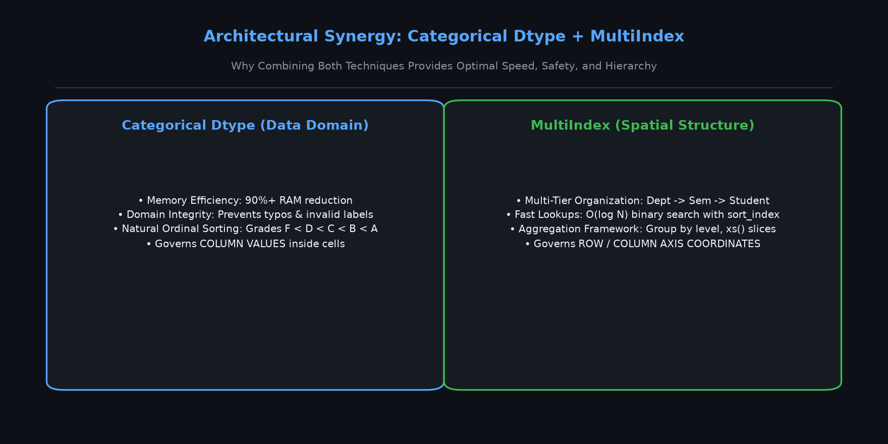
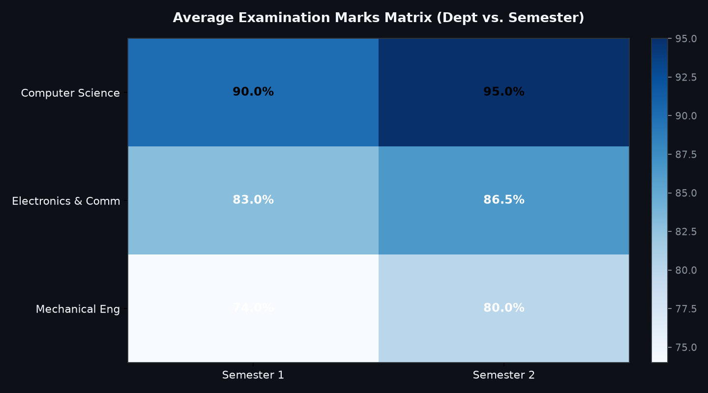
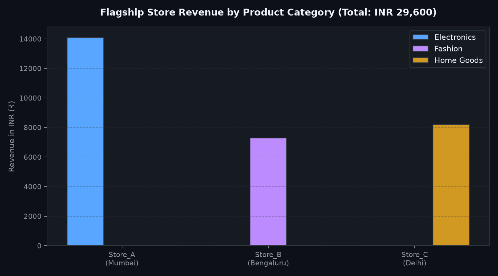
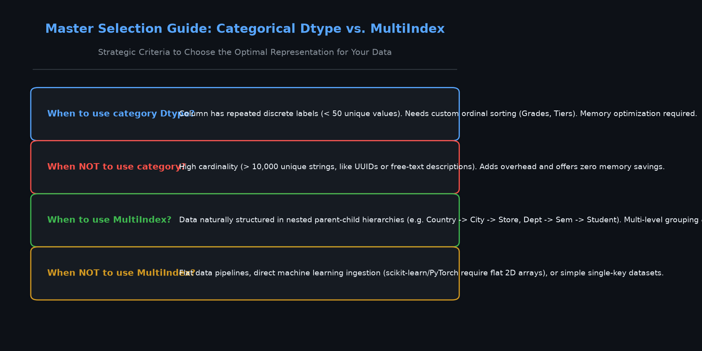
18. Guided Capstone Case Study A: College Performance Analytics
In this end-to-end institutional analytics lab, you are the Head Registrar for an engineering college. You receive an operational dataset of 10 student exam attempts across semesters and academic departments.
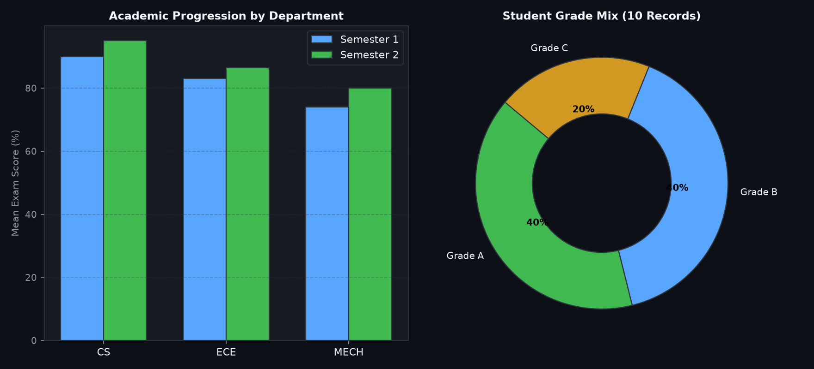
Full Verified Production Pipeline
19. Guided Capstone Case Study B: E-Commerce Sales Analytics
In this second capstone, you are the Principal Data Engineer for a multi-city omnichannel retail enterprise. You receive an operational ledger of 10 order transactions across three retail outlets.
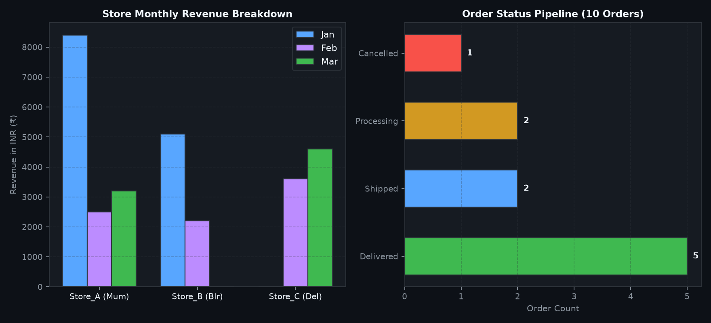
Full Verified Production Pipeline
20. 21 Interactive Practice Exercises & Capstone Mini-Project
Test your comprehensive understanding across all 5 progressive challenge tiers. Click any accordion to inspect the detailed problem statement, runnable Python solution, terminal output, and architectural takeaway.
Tier 1: Beginner / Conceptual Questions (Q1 – Q5)
Question 1: Nominal vs. Ordinal Classification
Problem: Classify the following columns as either Nominal or Ordinal: (A) Blood Group, (B) Customer Satisfaction ('Low', 'Med', 'High'), (C) Employee Department, (D) Academic Grade.
Answer:
• Blood Group: Nominal (No mathematical ordering)
• Customer Satisfaction: Ordinal ('Low' < 'Med' < 'High')
• Employee Department: Nominal (Distinct labels)
• Academic Grade: Ordinal ('F' < 'D' < 'C' < 'B' < 'A')
Question 2: Memory Mechanism of category Dtype
Problem: Explain how category dtype saves memory on repeated string columns.
Answer: It uses Dictionary Encoding. Unique strings are stored only once inside cat.categories. Individual table rows only store tiny 8-bit or 16-bit integer indices inside cat.codes, eliminating redundant string object pointers.
Question 3: Missing Category Codes
Problem: What internal integer code does Pandas assign to missing values (NaN) in a categorical column?
Answer: -1. Missing values are never added as string labels inside cat.categories; they are indexed by code -1.
Question 4: What is a MultiIndex?
Problem: How does a MultiIndex differ from a standard single-level index?
Answer: A standard index identifies rows by a single scalar key. A MultiIndex contains multiple hierarchical levels (e.g., [dept, semester, student_id]), enabling multi-dimensional spatial queries, cross-section slicing, and level-based aggregations.
Question 5: Single-Level vs. Multi-Level Query Speed
Problem: Why is range slicing on a sorted MultiIndex faster than filtering boolean conditions on standard flat columns?
Answer: A sorted MultiIndex uses O(log N) binary search across index levels, whereas boolean filtering on flat columns requires an O(N) full table linear scan.
Tier 2: Intermediate Practical Operations (Q6 – Q10)
Question 6: Converting and Ordering Academic Grades
Problem: Write code to convert a grade series ['B', 'A', 'F', 'C'] into an ordered category with hierarchy F < D < C < B < A.
Question 7: Creating MultiIndex with from_product()
Problem: Create a Cartesian product MultiIndex for 2 stores ('Store_A', 'Store_B') across 3 quarters ('Q1', 'Q2', 'Q3').
Question 8: Removing Unused Categories
Problem: Given a Series with categories ['CS', 'ECE', 'MECH'] where only 'CS' appears in data, purge the unused categories.
Question 9: Swapping Levels in MultiIndex
Problem: Invert index levels ['city', 'store'] to ['store', 'city'] using swaplevel().
Question 10: Slicing with IndexSlice
Problem: Use pd.IndexSlice to retrieve all 'Sem_2' records across all departments in a sorted MultiIndex DataFrame.
Tier 3: Practical Coding Challenges (Q11 – Q13)
Question 11: Cross-Section Retrieval with xs()
Problem: Slice all records for store='Store_A' across all cities directly without calling swaplevel().
Question 12: Flattening Multi-Level Groupby Columns
Problem: Group store sales by department, aggregate revenue with ['sum', 'mean'], and collapse the resulting 2-level column tuples into clean snake_case headers.
Question 13: Unstacking Hierarchical Series into Matrix
Problem: Convert a 2-level MultiIndex Series representing department-semester marks into a 2D matrix using unstack().
Tier 4: Multiple-Choice Questions with Explanations (Q14 – Q18)
Question 14 (MCQ): Which operation throws a TypeError on nominal categories?
Options:
(A) df['city'] == 'Mumbai'
(B) df['city'].isin(['Mumbai', 'Delhi'])
(C) df['city'] > 'Delhi'
(D) df['city'].value_counts()
Correct Answer: (C)
Explanation: Nominal categories do not possess mathematical hierarchy. Attempting inequality comparisons (>, <, >=) throws a TypeError unless ordered=True was declared.
Question 15 (MCQ): What happens to raw labels not present in declared categories?
Options:
(A) They are appended automatically
(B) They are converted into NaN (code -1)
(C) A KeyError is raised
(D) They are converted to empty string
Correct Answer: (B)
Explanation: When converting data using an explicit category list, any value outside the declared list silently becomes NaN.
Question 16 (MCQ): Why is observed=True recommended in groupby() in Pandas 2.3.3?
Options:
(A) It renames columns automatically
(B) It prevents empty Cartesian combinations and silences FutureWarnings
(C) It sorts columns alphabetically
(D) It deletes missing values from the index
Correct Answer: (B)
Explanation: In modern Pandas, observed=False is deprecated. observed=True only groups categories present in the data, preventing massive memory bloat.
Question 17 (MCQ): Which method generates a MultiIndex Cartesian product?
Options:
(A) MultiIndex.from_tuples()
(B) MultiIndex.from_arrays()
(C) MultiIndex.from_product()
(D) MultiIndex.set_index()
Correct Answer: (C)
Explanation: from_product() takes lists of level values and computes all possible Cartesian coordinate combinations.
Question 18 (MCQ): What does df.xs('CS', level='dept') do?
Options:
(A) Drops the 'CS' rows
(B) Extracts cross-section of 'CS' rows without needing swaplevel()
(C) Replaces 'CS' with NaN
(D) Resets the entire index
Correct Answer: (B)
Explanation: df.xs() extracts a cross-section along an intermediate level and drops that level by default, returning the remaining sub-hierarchy.
Tier 5: Real-World Debugging Exercises (Q19 – Q20)
Question 19 (Debugging): Fixing UnsortedIndexError during Slicing
Buggy Code:
Root Cause: Index is not lexicographically ordered ('ECE' appears before 'CS').
Corrected Solution: Call df = df.sort_index() prior to range slicing.
Question 20 (Debugging): Fixing Accidental Category Loss
Buggy Code:
Root Cause: set_categories() replaces the category universe; omitted existing categories become NaN.
Corrected Solution: Use s.cat.add_categories(["Platinum"]) to safely extend the available category set.
Capstone Mini-Project: College Performance Hierarchy & Category Analytics Lab
Question 21 (Capstone Lab): Multi-Tier Institutional Analytics Pipeline ▲
Comprehensive Problem Statement: You are tasked with constructing an institutional performance analytics engine for university accreditation:
- 1. Ingest an operational exam ledger with 6 student attempts across CS and ECE.
- 2. Convert
departmentinto nominal category andgradeinto ordered category (F < D < C < B < A). - 3. Build a MultiIndex on
['department', 'student_id']and sort it lexicographically. - 4. Slice high-performing students who earned Grade ≥ 'B'.
- 5. Calculate average marks grouped by department and unstack into an executive summary table.
- 6. Verify data integrity with Python assertions.
Extension Challenge: Retail sales ledger me ['city', 'store'] MultiIndex create karein, 'Delivered' status filter karein, aur monthly revenue matrix report unstack karein!
21. Topic Summary, Cheat Sheet, Glossary & Topic 18 Preview
Core Takeaways:
- Categorical Dtype: Shrinks memory by up to 98% for repeated string columns through Dictionary Encoding (codes + categories lookup table).
- Nominal vs. Ordinal: Nominal categories are purely qualitative identifiers. Ordinal categories have strict intrinsic ranking enabling inequality comparisons (
>,<,>=) and logical academic/business sorting. - The .cat Accessor: Divided into Inspection (
categories,codes), Modification (rename_categories,set_categories), and Cleanup (remove_unused_categories). - Modern groupby(observed=True): Crucial in Pandas 2.3.3 to suppress FutureWarnings and avoid empty Cartesian product rows.
- MultiIndex Architecture: Enables multi-dimensional spatial hierarchies on row or column axes. Allows fast O(log N) binary search lookups with
df.sort_index(). - Navigation & Slicing: Outer level selection
df.loc['CS'], coordinate tuplesdf.loc[('CS', 101)], and cross-level slicing withpd.IndexSliceanddf.xs().
Categorical & MultiIndex Rapid Cheat Sheet
| Operation / Goal | Pandas Syntax Expression | Key Behavioral Rule |
|---|---|---|
| Convert to Category | df['col'] = df['col'].astype('category') |
Infers unique labels automatically; unordered by default. |
| Explicit Ordered Category | pd.CategoricalDtype(categories=[...], ordered=True) |
Enforces custom sorting. Unknown values become NaN! |
| Inspect Internal Codes | s.cat.codes |
Returns int8/int16 array. -1 denotes missing value. |
| Purge Unused Categories | s.cat.remove_unused_categories() |
Safe cleanup of categories with 0 observations. |
| Modern Groupby | df.groupby('cat', observed=True).mean() |
Pandas 2.3.3 standard: omits unobserved categories. |
| Create MultiIndex from Cols | df.set_index(['col1', 'col2']) |
Promotes columns into hierarchical index. |
| Cartesian Product Index | pd.MultiIndex.from_product([[levels1], [levels2]]) |
Generates all combinations across levels. |
| Sort Hierarchical Index | df = df.sort_index() |
Mandatory before range slicing to prevent errors. |
| Direct Level Cross-Section | df.xs('Sem_1', level='semester') |
Slices intermediate level without swaplevel(). |
| Flatten MultiIndex Rows | df.reset_index() |
Converts index tiers back into ordinary columns. |
| Unstack Level to Columns | s.unstack(level='semester') |
Rotates row tier into horizontal 2D matrix. |
Glossary of Essential Technical Terms
- Categorical Variable: A qualitative variable taking on a limited, fixed set of possible values.
- Nominal Category: Unordered categorical data with no natural ranking (e.g. Department, City).
- Ordinal Category: Ordered categorical data possessing a strict mathematical hierarchy (e.g. Grades F < D < C < B < A).
- Dictionary Encoding: The storage optimization where repeated string labels are mapped to small integer codes.
- cat.categories: The Index object holding the unique declared category labels.
- cat.codes: The underlying integer array representing the index of each row's category.
- MultiIndex: A hierarchical index containing multiple stacked levels on a DataFrame's row or column axis.
- Index Levels: The distinct depth tiers of a MultiIndex (numbered 0, 1, 2 from outermost to innermost).
- Index Names: The descriptive string identifiers assigned to each tier of a MultiIndex (e.g.
['department', 'semester']). - IndexSlice: A specialized Pandas slice constructor for multi-level indexing:
pd.IndexSlice[:, 'Sem_1']. - swaplevel(): Swaps two specific levels of a MultiIndex.
- reorder_levels(): Re-orders three or more levels into a customized sequence.
- df.xs(): Cross-section selector that cuts across intermediate levels directly.
- Lexicographical Sorting: The strict alphabetical or numeric ordering of MultiIndex levels required for slicing.
- Cartesian Product: The mathematical combination of every element from set A with every element from set B (via
from_product()).
Ab aapne tabular data reshaping, categorical memory optimization, aur multi-dimensional MultiIndex structures ko master kar liya hai!
Next topic mein hum enter karenge financial markets, e-commerce telemetry, aur server logs ki heartbeat mein: Topic 18: Time Series Analysis & Datetime Handling — discovering pd.to_datetime(), timestamp parsing, frequency resampling (resample('M')), rolling window trends, and time-zone conversions!